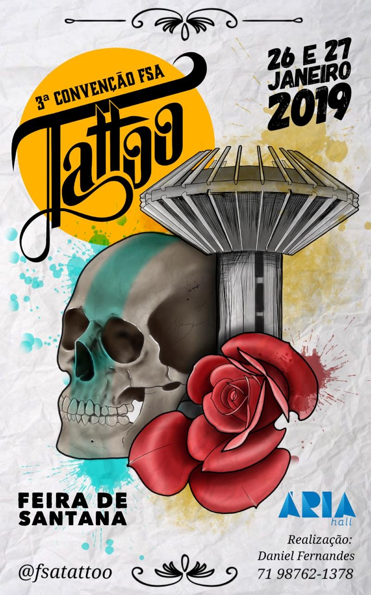

A ideia!
OutCast começou entre 3 mulheres tatuadoras, (Cris,Letícia e Agata) o sonho era ter seu próprio Studio de tatuagem, que através de fóruns e festivais de tatto se realizou, terminando com a fama de um dos mais renomados studios de tatuagem de São Paulo.
O espaço físico!
De início as tatuadoras começaram em uma garagem no Campo Limpo - Sp, mas depois de todo o crescimento que elas tiveram, em alguns anos conseguiram abrir um espaço na Vila Olímpia – Sp. Desde então, o que era apenas um estúdio comum se transformou em um dos mais renomados studios de tatuagem de SP, com gestão de qualidade nos procedimentos, catálogos de desenhos e criações exclusivas pra cada cliente.
Nosso objetivo!
Criar diferenças é um princípio entre todos que trabalham na Outcast, damos nosso máximo e colocamos tudo o que temos em cada trabalho. Com isso não atraímos apenas os públicos novos, mas muitos tatuadores renomados começaram a procurar o studio, dividindo ideias para levar desenvolvimento de outros estilos.
Ultimos Eventos onde participamos!
Tem espaço? Cabe uma tatto!
Diante tudo o que nos tornarmos hoje, na época, quando ainda fazíamos apenas pequenos trabalhos em nossa garagem, nos surgiu a oportunidade de participar presencialmente numa rede de Studio de tattoo renomada na grande São Paulo, fomos com vários outros grupos de tatuadores e nos destacamos entre toda a concorrência.
A maior importância das convenções de tatuagem é popularizar essa arte, promover uma ligação entre os profissionais e artistas, integrando o público apreciador na pele e apresentar as tendências, desde estilos até lançamentos de produtos.
E assim é que a arte na pele ganha fama e popularidade, pois é através das convenções e fóruns que colocamos nossa união e força artística.
